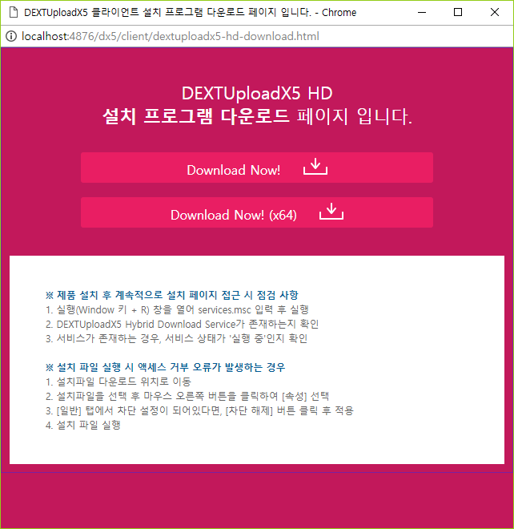
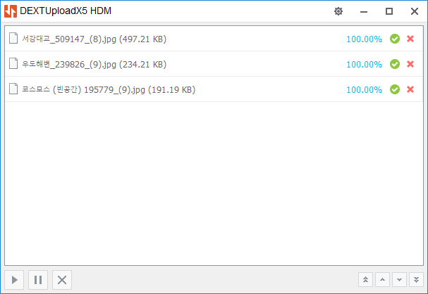
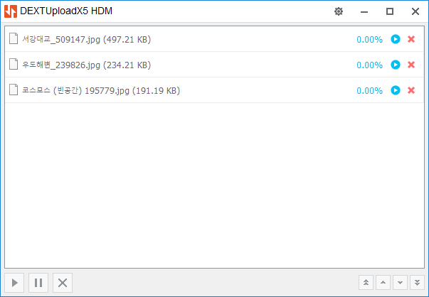
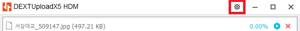
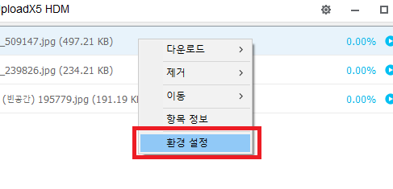
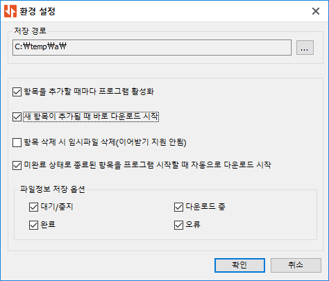

HD 응용프로그램을 이용하여 다운로드하기
DEXTUploadX5는 2.0.0.0 버전부터 HD 응용프로그램을 사용하여 파일을 다운로드할 수 있는 기능을 지원합니다.
HD는 윈도우 서비스(HDS)와 윈도우 응용프로그램(HDM)를 합하여 부르는 말이며, 사용자가 설치 프로그램을 실행하여 설치를 하면, 멀티 모듈, IE 모듈 상관 없이 다중 파일 다운로드가 가능해집니다.
멀티 모듈은 단일 파일 다운로드를 기본으로 제공하고 있고, 다중 파일 다운로드의 경우에는 크롬 브라우저를 제외하고는 다운로드할 파일의 크기에 제한이 있습니다. 더불어 다중 파일 다운로드를 하는 경우, 연속으로 파일을 받는 과정에서 브라우저 자체 질의가 있기 때문에, 파일 다운로드 과정이 매끄럽지 못한 문제점이 있습니다.
IE 모듈은 멀티 모듈의 제약을 넘어 다중 파일 다운로드를 자연스럽게 처리할 수 있지만, 오로지 IE(Internet Explorer) 브라우저에서만 동작합니다.
HD 응용프로그램은 윈도우 서비스와 윈도우 응용프로그램이 사용자 PC에서 동작하는 방식으로써, 브라우저와 HTTP 통신을 하여 파일 다운로드를 수행합니다. HD 응용프로그램은 설치가 되더라도 브라우저에 어떠한 플러그인도 설치가 되지 않습니다.
- dextuploadx5-configuration.js 파일에 hdDownloadURL 속성 설정하기
-
dextuploadx5Configuration은 컴포넌트 설정을 담은 자바스크립트 객체입니다.
dextuploadx5Configuration 객체에는 HD 응용프로그램의 설치 프로그램을 다운로드할 수 있는 경로를 나타내는 hdDownloadURL 속성이 등록되어 있으며, 이 속성은 2.0.0.0 버전부터 지원을 합니다.
// dextuploadx5-configuraiton.js 파일 내용입니다. win.dextuploadx5Configuration = { ... // HD 프로그램을 사용하는 경우, 제품이 설치되지 않았을 때, 제품을 다운로드할 수 있는 페이지로 이동시킵니다. // 다운로드 페이지 경로는 반드시 productPath 하위에 존재할 필요가 없으며, 주어진 환경에 따라 커스터마이징하여 사용하십시오. // 절대로 상대경로를 입력하지 마세요. // 전제 경로 예제: "http://www.sample.com/dx5/client/dextuploadx5-hd-download.html", // 동일 도메인이라면: location.origin + "/dx5/client/dextuploadx5-hd-download.html", hdDownloadURL: location.origin + "/dx5/client/dextuploadx5-hd-download.html", // HD 프로그램을 자동으로 업데이트할 수 있는 경로입니다. // 주어진 환경에 따라 커스터마이징하여 사용하되, 절대로 상대경로를 입력하지 마십시오. // 서버 MIME 설정에 따라 다운로드가 실패할 수 있으므로, exe 파일이 다운로드할 수 있도록 서버 설정이 필요할 수 있습니다. // 절대로 상대경로를 입력하지 마십시오. // 전제 경로 예제: "http://www.sample.com/dx5/client/dextuploadx5-hd-installer.exe" // 동일 도메인이라면: location.origin + "/dx5/client/dextuploadx5-hd-installer.exe" hd32UpdateURL: location.origin + "/dx5/client/dextuploadx5-hd-installer.exe", // 64비트용 설치 프로그램을 가리키는 업데이트 경로입니다. hd64UpdateURL: location.origin + "/dx5/client/dextuploadx5-hd-installer-x64.exe" }만약 HD 응용프로그램이 설치 되지 않았을 경우, hdDownloadURL에 설정된 주소가 팝업으로 열립니다. 만일 PC에 설치된 HD 응용프로그램이 dextuploadx5Configuration 객체의 version 속성 값보다 낮다면, 상위 버전을 사용하기 위해서 설치 프로그램을 다운로드할 수 있도록 hdDownloadURL에 설정된 주소로 팝업을 열릴 수 있습니다.

위의 페이지는 제품에서 기본적으로 제공하는 다운로드 페이지이며, 각 사이트에 맞도록 만들어진 고유 페이지를 사용하는 것을 권고합니다.
- 다운로드 항목 등록하기
-
가상 파일을 등록하려면 addVirtualFile 함수를 사용하거나 addVirtualFileList 함수를 사용하며, json 객체 형식으로 등록이 됩니다.
- vindex: 가상 파일을 구분 짓는 유일한 키로써, 어떤 형식이라도 상관이 없지만, 중복되지 않아야 합니다. (필수항목)
- name: 가상 파일의 이름입니다. (필수항목)
- size: 가상 파일의 크기이며 byte 단위를 사용합니다. (필수항목)
- lock: 잠금 상태가 true이면 파일을 삭제할 수 없습니다.
var dx = dx5.get(id); // 개별로 등록할 때 dx.addVirtualFile({ vindex: "IDX0001", name: "가상파일.txt", size: 12345 }); dx.addVirtualFile({ vindex: "IDX0002", name: "잠긴-가상파일.txt", size: 45678, lock: true }); dx.addVirtualFile({ vindex: "IDX0003", name: "코스모스.jpg", size: 195779 }); // 여러 개를 한 번에 등록할 때 dx.addVirtualFileList([ { vindex: "IDX0001", name: "가상파일.txt", size: 12345 }, { vindex: "IDX0002", name: "잠긴-가상파일.txt", size: 45678, lock: true }, { vindex: "IDX0003", name: "코스모스.jpg", size: 195779 } ]);가상 파일이 다운로드 대상이 되려면 json 속성 중에 downUrl 또는 url 속성이 설정되어 있어야 합니다.
(멀티 모듈은 다운로드 대상을 downUrl 속성으로 설정해야만 했고, IE 모듈은 url 속성으로 설정을 해야 했는데, 1.4.1.0 버전부터 멀티 모듈도 url 속성을 사용하여 다운로드 대상을 설정할 수 있도록 개선되었습니다. IE 모듈은 여전히 url 속성만을 사용합니다.)
// 다운로드 경로 정보가 없어서 다운로드할 수 없는 가상 파일입니다. dx.addVirtualFile({ vindex: "IDX0001", name: "가상파일.txt", size: 12345 }); // 다운로드 경로가 있으면 다운로드할 수 있습니다. dx.addVirtualFile({ vindex: "IDX0003", name: "서강대교_509147.jpg", size: 509147, url: "http://../file/attach/서강대교_509147.jpg" }); dx.addVirtualFile({ vindex: "IDX0003", name: "서강대교_509147.jpg", size: 509147, url: "http://../common-download.do?key=FID0001" });downUrl 또는 url 속성 값은 반드시 스키마(http, https)로 시작하는 웹 URL이어야 합니다.
URL에 한글이나 특수 문자가 들어간 경우에는 대상을 못 찾거나, 다운로드가 실패하는 경우가 있습니다. (반드시 안되는 것이 아니라, 브라우저 종류 혹은 버전마다 차이가 있을 수 있습니다.)
이런 경우 다국어 및 특수 문자가 사용되는 구간을 encodeURIComponent 자바스크립트 함수를 사용하여 인코딩을 하면 됩니다.
dx.addVirtualFile({ vindex: "IDX0003", // 인코딩 불필요 name: "서강대교_509147.jpg", size: 509147, // 인코딩 필요 url: "http://../file/attach/" + encodeURIComponent("서강대교_509147.jpg") });HD는 파일을 다운로드할 때, 대상을 분할하여 다운로드할 수 있습니다. 가상 파일을 등록할 때, chunkSize 속성을 사용하면, 분할되는 크기를 지정할 수 있습니다. 개별 사용자의 입장에서는 큰 체감은 없지만, 서버의 입장에서는 요청에 대한 응답성을 높이는데 도움이 됩니다.
chunkSize 속성을 지정하지 않거나 0으로 설정하면 분할하지 않고 다운로드를 진행합니다.
dx.addVirtualFile({ vindex: "IDX0003", name: "서강대교_509147.jpg", size: 509147, url: "http://../file/attach/" + encodeURIComponent("서강대교_509147.jpg"), // 10MB로 분할 크기를 지정합니다. (MB 단위로만 지정 가능) chunkSize: 10 }); - 버튼 연결하기
-
HD 응용프로그램을 사용하여 다운로드할 때, DEXTUploadX5 제품은 항목에 다운로드 버튼을 따로 제공하지 않습니다.
대신에 스크립트를 사용하여 외부 HTML 버튼과 컴포넌트 기능을 연결해줘야 합니다.
<button type="button" onclick="download('컴포넌트아이디');">다운로드</button> <script> function download(id) { // 플래그 값에 따라 다운로드를 수행합니다. // AUTO: 첫 번째 가상 파일을 다운로드합니다. // SELECTED: 선택된 대상 중에 첫 번째 가상 파일을 다운로드합니다. // CHECKED: 체크된 대상 중에 첫 번째 가상 파일을 다운로드합니다. dx5.get(id).downloadToHD("AUTO"); } </script>복잡한 스크립트를 사용하지 않고서 컴포넌트 로드 시점에 자동 바인딩이 되는 기능도 함께 제공하고 있습니다.
<button type="button" id="btn-down-auto">다운로드</button> <button type="button" id="btn-down-selected">선택 다운로드</button> <button type="button" id="btn-down-checked">체크 다운로드</button> <script> dx5.create({ ..., // 컴포넌트가 생성될 때, 파일 다운로드 기능이 자동으로 연결하도록 합니다. btnDownloadToHDAuto: "btn-down-auto", btnDownloadToHDSelected: "btn-down-selected", btnDownloadToHDChecked: "btn-down-checked" }); </script>자동 바인딩 기능은 매우 편리하나, 복잡한 기능을 구현하기에는 적합치 않을 수 있습니다.
- 다운로드 요청에 따른 서버 측 처리
-
// 다운로드할 대상이 웹 주소로 노출되어 있는 경우 { vindex: "IDX0003", name: "서강대교_509147.jpg", size: 509147, url: "http://../files/attach/서강대교_509147.jpg" }다운로드 하려는 대상이 웹 주소를 가지고 있다면, 대상을 호출했을 때, 다운로드가 가능하도록 서버에서는 응답 헤더에 "Content-Disposition: attachment"를 추가하는 것으로 설정이 끝납니다.
멀티 모듈에서는 기존 다운로드 방식은 사용할 때, Content-Disposition 헤더를 넣지 않는다면, 브라우저가 인식할 수 있는 이미지(JPG, GIF, PNG)와 같은 파일들은 다운로드가 되지 않고 바로 화면에 출력해버리는 문제가 있습니다.
이와 달리 IE 모듈은 다운로드를 하는 대상이 브라우저가 아니기 때문에, Content-Disposition 헤더를 설정하지 않더라도 다운로드가 가능합니다.
그러나 HD 응용프로그램은 멀티 모듈과 IE 모듈을 구별하지 않고 IE 모듈처럼 Content-Disposition 헤더 설정을 필요로 하지 않으므로 웹서버 또는 WAS 서버 수준의 작업은 따로 없습니다.
다만 대상이 웹 주소를 가지고 있지 않거나, URL 은닉이 필요한 경우라면 웹 애플리케이션을 사용하여 다운로드를 할 수 있도록 서비스를 구성해야 합니다.
// 다운로드할 대상이 웹 주소에 없거나, URL 은닉 처리를 위해서 웹 애플리케이션을 사용하는 경우 { vindex: "IDX0003", name: "서강대교_509147.jpg", size: 509147, url: "http://../files/service/common-download.do?key=FID0001" }다음은 자바 JSP 혹은 서블릿 환경에서 DEXTUploadNJ 제품을 사용하여 서비스를 구현한 경우입니다.
주어진 매핑 서블릿(JSP도 가능)에서 FileDownload 클래스를 사용하여 다운로드를 처리할 수 있습니다.
# 서버 측 설정입니다. File target = null; String key = request.getParameter("key"); if (key.equals("FID0001")) target = new File(fileRoot, "서강대교_509147.jpg"); else if (key.equals("FID0002")) target = new File(fileRoot, "우도해변_239826.jpg"); else if (key.equals("FID0003")) target = new File(fileRoot, "코스모스 (빈공간) 195779.jpg"); if (target == null || target.exists() == false || target.isFile() == false) { response.sendError(HttpServletResponse.SC_NOT_FOUND, "주어진 키에 해당하는 파일 정보가 없습니다."); return; } try { // FileDownload 객체를 생성합니다. FileDownload dextnj = new FileDownload(); // 인코딩을 UTF-8로 설정합니다. response.setCharacterEncoding("UTF-8"); // 파일을 첨부 파일 형식으로 다운로드합니다. dextnj.download(request, response, target); } catch (Exception e) { throw new ServletException(e); }다음은 자바 Spring 웹 프레임워크 환경에서 DEXTUploadNJ 제품을 사용하여 서비스를 구현한 경우입니다.
주어진 요청에 매핑된 컨트롤러의 메소드에서 DEXTUploadNJFileDownloadView 클래스를 사용하여 다운로드를 처리할 수 있습니다.
# 서버 측 설정입니다. File target = null; String fileRoot = request.getSession().getServletContext().getRealPath("/files/attach"); if (key.equals("FID0001")) target = new File(fileRoot, "서강대교_509147.jpg"); else if (key.equals("FID0002")) target = new File(fileRoot, "우도해변_239826.jpg"); else if (key.equals("FID0003")) target = new File(fileRoot, "코스모스 (빈공간) 195779.jpg"); // 인코딩을 UTF-8로 설정합니다. response.setCharacterEncoding("UTF-8"); if (target == null || target.exists() == false || target.isFile() == false) { response.sendError(HttpServletResponse.SC_NOT_FOUND, "주어진 키에 해당하는 파일 정보가 없습니다."); return null; } else { // DEXTUploadNJFileDownloadView 뷰 클래스를 사용하여 파일을 다운로드할 수 있습니다. DEXTUploadNJFileDownloadView dextnj = new DEXTUploadNJFileDownloadView(target); return new ModelAndView(dextnj); } - HD 응용프로그램 화면 설명
-
다운로드 버튼을 클릭하거나 downloadToHD 메소드가 호출되면 아래와 같이 HD 프로그램이 실행되며, 대상 항목들이 추가가 된 후, 바로 다운로드가 시작됩니다.

다운로드 대상 항목이 다운로드 완료된 상태라면 우측에 초록색 확인 아이콘이 보입니다. 이 아이콘을 클릭하면 대상이 다운로드된 위치가 열리며, 엑스 아이콘을 클릭하면 항목을 목록에서 제거합니다.

만일 자동 다운로드 옵션이 지정되지 않았다면, 파일들은 다운로드할 대기 상태에 있게 되며, 우측에 파란색 재생(다운로드) 아이콘으로 표시가 되고, 이 아이콘을 클릭하면 해당 항목만 다운로드를 수행합니다.
하단바 왼쪽에는 전체 항목을 다운로드, 전체 항목을 중지, 전체 항목을 삭제하는 버튼이 있고, 하단바 우측에는 선택된 항목의 다운로드 순서를 변경하는 버튼이 있습니다.
- HD 응용프로그램 옵션
-

HD 응용프로그램 타이틀 바의 별 모양의 아이콘을 클릭하거나, 마우스 우클릭을 하여 '환경 설정' 창을 띄워 옵션을 조정할 수 있습니다.

만일 자동 다운로드 옵션이 지정되지 않았다면, 파일들은 다운로드할 대기 상태에 있게 되며, 우측에 파란색 재생(다운로드) 아이콘으로 표시가 되고, 이 아이콘을 클릭하면 해당 항목만 다운로드를 수행합니다.
하단바 왼쪽에는 전체 항목을 다운로드, 전체 항목을 중지, 전체 항목을 삭제하는 버튼이 있고, 하단바 우측에는 선택된 항목의 다운로드 순서를 변경하는 버튼이 있습니다.

-
저장 경로
파일을 다운로드할 기준 경로를 나타내며, 변경이 가능합니다.
-
항목을 추가할 때마다 프로그램 활성화
HD 응용프로그램으로 항목이 추가될 때, 이를 확인할 수 있도록 HD 응용프로그램이 나타납니다. (간혹 PC의 다른 프로그램이 선점하여 HD 응용프로그램이 맨 앞으로 나타나지 못 할 경우도 있습니다.)
-
새 항목이 추가될 때 바로 다운로드 시작
HD 응용프로그램이 추가될 때 바로 대상을 다운로드하거나 다운로드할 수 있도록 대기 상태가 됩니다. 기본값은 체크 상태이지만, 체크 해지하면 사용자가 직접 다운로드 버튼을 눌러 다운로드를 수행해야 합니다.
-
항목 삭제 시 임시파일 삭제(이어받기 지원 안함)
HD 응용프로그램은 이어받기가 기본 동작하며, 목록에서 대상이 제거가 되었다고 하더라도 다음에 다운로드할 때는 이어받기가 진행됩니다. 그러나 이 옵션을 체크하면, 대상 항목을 다시 추가하여 다운로드를 하면 처음부터 내려받기 시작합니다.(이 옵션을 사용하는 이유는 서버에 문제가 있어, 다운로드하는 대상에 변동이 있거나 하는 경우에 다운로드 작업에 문제가 발생할 수 있기 때문입니다.) 이 옵션은 항목이 삭제된 후의 이어받기 동작에 관련된 것으로써, 그 외의 과정에서 발생하는 이어받기에는 영향을 미치지 않습니다.
-
미완료 상태로 종료된 항목을 프로그램 시작할 때 자동으로 다운로드 시작
파일을 다운로드하고 있는 중간에 프로그램 실행이 중단(트레이로 진입이 아니라 Exit 메뉴를 사용하여 완전히 종료되는 경우)되어 꺼지면, 다음에 다시 프로그램이 시작될 때, 중단되었던 다운로드가 다시 재개가 되도록 하는 옵션입니다. 다운로드가 되는 대상은 프로그램이 중단된 시점에 다운로드 중이었던 항목으로 한정합니다.
-
파일정보 저장 옵션
프로그램 실행이 중단되었을 때, 목록에 있던 항목들 중에서 다음에 프로그램이 다시 실행될 때, 복구(목록에 포함될)할 대상을 가리킵니다. (만약 '다운로드 중'이 체크 해지가 된 상태라면 '미완료 상태로 종료된 항목을 프로그램 시작할 때 자동으로 다운로드 시작' 옵션이 체크된 상태라 하더라도 불러올 대상이 없으므로 다운로드 작업이 진행되지 않습니다.)
-
- HD 응용프로그램 제한
-
-
HD 응용프로그램은 파일을 바로 실행하는 기능을 제공하지 않습니다.
-
HD 응용프로그램은 브라우저를 통해 파일을 다운로드하는 것이 아니므로 브라우저의 쿠키 및 세션 그리고 인증 정보를 공유하지 않습니다.
만약 IE(Internet Explorer) 브라우저에서 HD 응용프로그램을 사용한다면, 세션 및 쿠키가 공유될 수 있습니다.
-